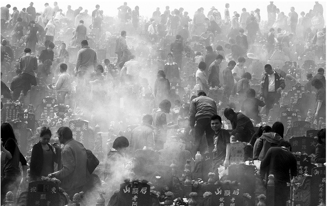
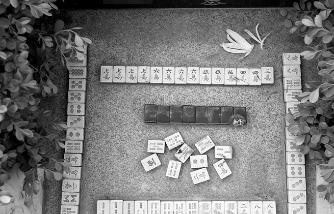
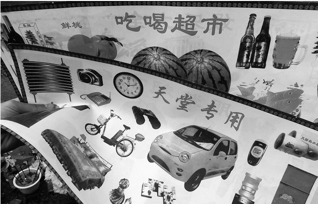
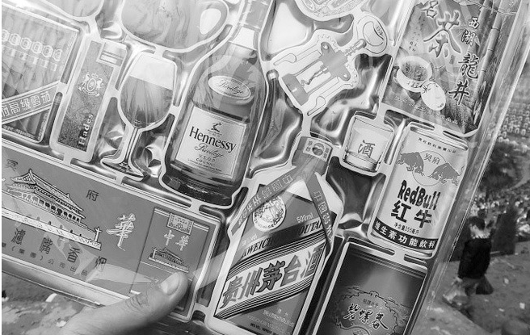
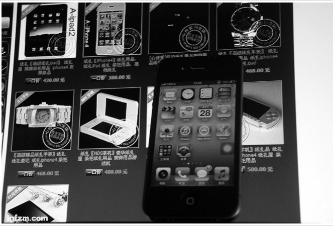

2012年4月4日，清明节当日，福建晋江某公墓里，前来扫墓的人流达到顶峰。几乎每年清明节全国各地陵园都会出现这样的情景。 （何远/图）

合肥一陵园内的墓碑前，摆放了一桌麻将，牌面显示墓主抓了一手好牌，但是赢得很诡异。 （王志强/图）

2013年3月24日，湖北宜昌某公墓迎来清明节前首个扫墓高峰。吃穿住用行各种祭品样样俱全。 （刘君凤/图）

2013年3月24日，湖北宜昌，纸制名酒名烟名茶是热销的祭祀品。 （刘君凤/图）
